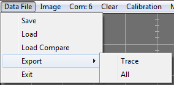

Save: Brings up the file save
dialog. All stored traces form the part under test are saved. The file
is a text document containing the record length (fixed at 256), the
serial number text and, a record for each pin. The record is: trace
pin, sweep pin, Vc[0], Ic[0], Vb[0], Ib[0],...,Vc[255],
Ic[255], Vb[255], Ib[255]. After the last pin record is written, the
value 32000 marks the end of the data. The maximum number of traces
stored is 1024. The base values are the fixed static values set by the
Mini_CT form. They are not read from Mini_CT.
Note: To save a comparison part file, click the
Swap button then save the traces.
Load: Brings up the file open dialog. Select a data text file to load. All traces are loaded for viewing.
Load Compare: Brings up the file open dialog. Select a data text file to load. All traces are loaded into the
Compare to Part buffer.
Export: Writes a comma
delimited file for import to speadsheet programs. The data is saved as
a comma delimited text file. The first line written contains the sweep
and trace
numbers. Since there are four data items per trace, Vc, Vi, Vb, and Ib,
four pin designators are writen for each trace. e.g. A three trace file
would have: "Sweep:1", "Trace:1","Sweep:1", "Trace:1", "Sweep:1",
"Trace:1", "Sweep:2", "Trace:1", "Sweep:2", "Trace:1", "Sweep:3",
"Trace:1", "Sweep:3". Each suscessive line is the data for the
sample points 0 through 255. The first line would contain the first
sample data for the three traces: Vc[0], Ic[0], Vb[0], Ib[0], Vc[0],
Ic[0], Vb[0], Ib[0], Vc[0], Ic[0], Vb[0], Ib[0]. Clicking on
All writes data for all stored traces. Clicking on
Trace writes the data for the currently displayed trace.
Exit: Closes the Mini_CT application.
Main